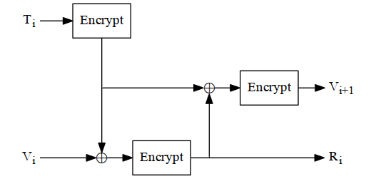
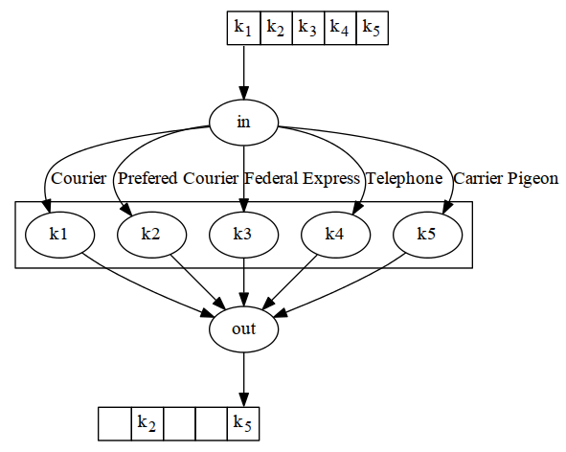

Alice and Bob have a secure communications system. They play mental poker, simultaneously sign contracts, even exchange digital cash. Their protocols are secure. Their algorithms are top-notch. Unfortunately, they buy their keys from Eve’s “Keys-R-Us,” whose slogan is “You can trust us: Security is the middle name of someone our ex-mother-in-law’s travel agent met at the Kwik-E-Mart.”
Eve doesn’t have to break the algorithms. She doesn’t have to rely on subtle flaws in the protocols. She can use their keys to read all of Alice’s and Bob’s message traffic without lifting a cryptanalytic finger.
In the real world, key management is the hardest part of cryptography. Designing secure cryptographic algorithms and protocols isn’t easy, but you can rely on a large body of academic research. Keeping the keys secret is much harder.
Cryptanalysts often attack both symmetric and public-key cryptosystems through their key management. Why should Eve bother going through all the trouble of trying to break the cryptographic algorithm if she can recover the key because of sloppy key storage procedures? Why should she spend $10 million building a cryptanalysis machine if she can spend $1000 bribing a clerk? Spending a million dollars to buy a well-placed communications clerk in a diplomatic embassy can be a bargain. The Walkers sold U.S. Navy encryption keys to the Soviets for years. The CIA’s director of counterintelligence went for less than $2 million, wife included. That’s far cheaper than building massive cracking machines and hiring brilliant cryptanalysts. Eve can steal the keys. She can arrest or abduct someone who knows the keys. She can seduce someone and get the keys that way. (The Marines who guarded the U.S. Embassy in Moscow were not immune to that attack.) It’s a whole lot easier to find flaws in people than it is to find them in cryptosystems.
Alice and Bob must protect their key to the same degree as all the data it encrypts. If a key isn’t changed regularly, this can be an enormous amount of data. Unfortunately, many commercial products simply proclaim “We use DES” and forget about everything else. The results are not very impressive.
For example, the DiskLock program for Macintosh (version 2.1), sold at most software stores, claims the security of DES encryption. It encrypts files using DES. Its implementation of the DES algorithm is correct. However, DiskLock stores the DES key with the encrypted file. If you know where to look for the key, and want to read a file encrypted with DiskLock’s DES, recover the key from the encrypted file and then decrypt the file. It doesn’t matter that this program uses DES encryption — the implementation is completely insecure.
Further information on key management can be found in [457,98,1273,1225,775,357]. The following sections discuss some of the issues and solutions.
The security of an algorithm rests in the key. If you’re using a cryptographically weak process to generate keys, then your whole system is weak. Eve need not cryptanalyze your encryption algorithm; she can cryptanalyze your key generation algorithm.
DES has a 56-bit key. Implemented properly, any 56-bit string can be the key; there are 256 (1016) possible keys. Norton Discreet for MS-DOS (versions 8.0 and earlier) only allows ASCII keys, forcing the high-order bit of each byte to be zero. The program also converts lowercase letters to uppercase (so the fifth bit of each byte is always the opposite of the sixth bit) and ignores the low-order bit of each byte, resulting in only 240 possible keys. These poor key generation procedures have made its DES ten thousand times easier to break than a proper implementation.
Table 8.1 gives the number of possible keys with various constraints on the input strings. Table 8.2 gives the time required for an exhaustive search through all of those keys, given a million attempts per second. Remember, there is very little time differential between an exhaustive search for 8-byte keys and an exhaustive search of 4-, 5-, 6-, 7-, and 8-byte keys.
| 4-Byte | 5-Byte | 6-Byte | 7-Byte | 8-Byte | |
|---|---|---|---|---|---|
| Lowercase letters (26): | 460,000 | 1.2*107 | 3.1*108 | 8.0*109 | 2.1*1011 |
| Lowercase letters and digits (36): | 1,700,000 | 6.0*107 | 2.2*109 | 7.8*1010 | 2.8*1012 |
| Alphanumeric characters (62): | 1.5*107 | 9.2*108 | 5.7*1010 | 3.5*1012 | 2.2*1014 |
| Printable characters (95): | 8.1*107 | 7.7*109 | 7.4*1011 | 7.0*1013 | 6.6*1015 |
| ASCII characters (128): | 2.7*108 | 3.4*1010 | 4.4*1012 | 5.6*1014 | 7.2*1016 |
| 8-bit ASCII characters (256): | 4.3*109 | 1.1*1012 | 2.8*1014 | 7.2*1016 | 1.8*1019 |
| 4-Byte | 5-Byte | 6-Byte | 7-Byte | 8-Byte | |
|---|---|---|---|---|---|
| Lowercase letters (26): | .5 seconds | 12 seconds | 5 minutes | 2.2 hours | 2.4 days |
| Lowercase letters and digits (36): | 1.7 seconds | 1 minute | 36 minutes | 22 hours | 33 days |
| Alphanumeric characters (62): | 15 seconds | 15 minutes | 16 hours | 41 days | 6.9 years |
| Printable characters (95): | 1.4 minutes | 2.1 hours | 8.5 days | 2.2 years | 210 years |
| ASCII characters (128): | 4.5 minutes | 9.5 hours | 51 days | 18 years | 2300 years |
| 8-bit ASCII characters (256): | 1.2 hours | 13 days | 8.9 years | 2300 years | 580,000 years |
All specialized brute-force hardware and parallel implementations will work here. Testing a million keys per second (either with one machine or with multiple machines in parallel), it is feasible to crack lowercase-letter and lowercase-letter-and-number keys up to 8 bytes long, alphanumeric-character keys up to 7 bytes long, printable character and ASCII-character keys up to 6 bytes long, and 8-bit-ASCII-character keys up to 5 bytes long.
And remember, computing power doubles every 18 months. If you expect your keys to stand up against brute-force attacks for 10 years, you’d better plan accordingly.
When people choose their own keys, they generally choose poor ones. They’re
far more likely to choose “Barney” than “*9 (hH/A.” This is not always due to
poor security practices; “Barney” is easier to remember than “*9 (hH/A.” The
world’s most secure algorithm won’t help much if the users habitually choose
their spouse’s names for keys or write their keys on little pieces of paper in
their wallets. A smart brute-force attack doesn’t try all possible keys in
numerical order; it tries the obvious keys first.
This is called a dictionary attack, because the attacker uses a dictionary of common keys. Daniel Klein was able to crack 40 percent of the passwords on the average computer using this system [847,848]. No, he didn’t try one password after another, trying to login. He copied the encrypted password file and mounted the attack offline. Here’s what he tried:
Daniel V. Klein,” some of the passwords that
would be tried were: klone, klone0, klone1, klone123, dvk, dvkdvk,
dklein, DKlein leinad, nielk, dvklein, danielk, DvkkvD,
DANIEL-KLEIN, (klone), KleinD, and so on.
spain,” “spanish,” and “spaniard” would all be considered); names
of famous people; cartoons and cartoon characters; titles, characters, and
locations from films and science fiction stories; mythical creatures
(garnered from Bulfinch’s Mythology and dictionaries of mythical
beasts); sports (including team names, nicknames, and specialized
terms); numbers (both as numerals — “2001,” and written
out — “twelve”); strings of letters and numbers (“a,” “aa,” “aaa,” “aaaa,”
etc.); Chinese syllables (from the Pinyin Romanization of Chinese, an
international standard system of writing Chinese on an English
keyboard); the King James Bible; biological terms; colloquial and
vulgar phrases (such as “fuckyou,” “ibmsux,” and “deadhead”);
keyboard patterns (such as “qwerty,” “asdf,” and “zxcvbn”);
abbreviations (such as “roygbiv” — the colors in the rainbow, and
“ooottafagvah” — a mnemonic for remembering the 12 cranial nerves);
machine names (acquired from /etc/hosts); characters, plays, and
locations from Shakespeare; common Yiddish words; the names of
asteroids; and a collection of words from various technical papers Klein
previously published. All told, more than 60,000 separate words were
considered per user (with any inter- and intra-dictionary duplicates
being discarded).
o’ to the digit ‘0’ (so that the word
“scholar” would also be checked as “sch0lar”), changing the letter ‘l’ to
the digit ‘1’ (so that the word “scholar” would also be checked as
“scho1ar”), and performing similar manipulation to change the letter ‘z’
into the digit ‘2’, and the letter ‘s’ into the digit ‘5’. Another test was to
make the word into a plural (irrespective of whether the word was
actually a noun), with enough intelligence built in so that “dress”
became “dresses,” “house” became “houses,” and “daisy” became
“daisies.” Klein did not consider pluralization rules exclusively, though,
so that “datum” forgivably became “datums” (not “data”), while
“sphynx” became “sphynxs” (and not “sphynges”). Similarly, the
suffixes “-ed,” “-er,” and “-ing” were added to transform words like
“phase” into “phased,” “phaser,” and “phasing.” These additional tests
added another 1,000,000 words to the list of possible passwords that
were tested for each user.
michael” would also be checked as “mIchael,”
“miChael,” “micHael,” “michAel,” etc.), double-letter capitalization
variations (“MIchael,” “MiChael,” “MicHael,”..., “mIChael,”
“mIcHael,” etc.), triple-letter variations, etc. The single-letter variations
added roughly another 400,000 words to be checked per user, while the
double-letter variations added another 1,500,000 words. Three-letter
variations would have added at least another 3,000,000 words per user
had there been enough time to complete the tests. Tests of four-, five-,
and six-letter variations were deemed to be impracticable without much
more computational horsepower to carry them out.
A dictionary attack is much more powerful when it is used against a file of keys and not a single key. A single user may be smart enough to choose good keys. If a thousand people each choose their own key as a password to a computer system, the odds are excellent that at least one person will choose a key in the attacker’s dictionary.
Good keys are random-bit strings generated by some automatic process. If the key is 64 bits long, every possible 64-bit key must be equally likely. Generate the key bits from either a reliably random source (see Section 17.14) or a cryptographically secure pseudo-random-bit generator (see Chapters 16 and 17.) If these automatic processes are unavailable, flip a coin or roll a die.
This is important, but don’t get too caught up in arguing about whether random noise from audio sources is more random than random noise from radioactive decay. None of these random-noise sources will be perfect, but they will probably be good enough. It is important to use a good random-number generator for key generation, but it is far more important to use good encryption algorithms and key management procedures. If you are worried about the randomness of your keys, use the key-crunching technique described below.
Some encryption algorithms have weak keys: specific keys that are less secure than the other keys. I advise testing for these weak keys and generating a new one if you discover one. DES has only 16 weak keys out of 256, so the odds of generating any of these keys are incredibly small. It has been argued that a cryptanalyst would have no idea that a weak key is being used and therefore gains no advantage from their accidental use. It has also been argued that not using weak keys gives a cryptanalyst information. However, testing for the few weak keys is so easy that it seems imprudent not to do so.
Generating keys for public-key cryptography systems is harder, because often the keys must have certain mathematical properties (they may have to be prime, be a quadratic residue, etc.). Techniques for generating large random prime numbers are discussed in Section 11.5. The important thing to remember from a key management point of view is that the random seeds for those generators must be just that: random.
Generating a random key isn’t always possible. Sometimes you need to
remember your key. (See how long it takes you to remember 25e8 56f2 e8ba c820).
If you have to generate an easy-to-remember key, make it obscure. The
ideal would be something easy to remember, but difficult to guess. Here are
some suggestions:
turtle*moose” or “zorch!splat”
Mein Luftkissenfahrzeug ist voller Aale!” generates the key “MLivA!”
A better solution is to use an entire phrase instead of a word, and to convert that phrase into a key. These phrases are called pass phrases. A technique called key crunching converts the easy-to-remember phrases into random keys. Use a one-way hash function to transform an arbitrary-length text string into a pseudo-random-bit string. For example, the easy-to-remember text string:
My name is Ozymandias, king of kings. Look on my works, ye mighty, and despair.
might crunch into this 64-bit key:
e6c1 4398 5ae9 0a9b
Of course, it can be difficult to type an entire phrase into a computer with the echo turned off. Clever suggestions to solve this problem would be appreciated.
If the phrase is long enough, the resulting key will be random. Exactly what “long enough” means is open to interpretation. Information theory tells us that standard English has about 1.3 bits of information per character (see Section 11.1). For a 64-bit key, a pass phrase of about 49 characters, or 10 normal English words, should be sufficient. As a rule of thumb, figure that you need five words for each 4 bytes of key. That’s a conservative assumption, since it doesn’t take into account case, spacing, and punctuation.
This technique can even be used to generate private keys for public-key cryptography systems: The text string could be crunched into a random seed, and that seed could be fed into a deterministic system that generates public-key/private-key key pairs.
If you are choosing a pass phrase, choose something unique and easy-to-remember. Don’t choose phrases from literature — the example from “Ozymandias” is a bad one. Both the complete works of Shakespeare and the dialogue from Star Wars are available on-line and can be used in a dictionary attack. Choose something obscure, but personal. Include punctuation and capitalization; if you can, include numbers and non-alphanumeric symbols. Poor or improper English, or even a foreign language, makes the pass phrase less susceptible to a dictionary attack. One suggestion is to use a phrase that is “shocking nonsense”: something offensive enough that you are likely to remember and unlikely to write down.
Despite everything written here, obscurity is no substitute for true randomness. The best keys are random keys, difficult as they are to remember.
The ANSI X9.17 standard specifies a method of key generation (see Figure 8.1) [55]. This does not generate easy-to-remember keys; it is more suitable for generating session keys or pseudo-random numbers within a system. The cryptographic algorithm used to generate keys is triple-DES, but it could just as easily be any algorithm.

Figure 8.1 ANSI X9.17 key generation.
Let EK(X) be triple-DES encryption of X with key K. This is a special key reserved for secret key generation. V0 is a secret 64-bit seed. T is a timestamp. To generate the random key Ri, calculate:
Ri = EK(EK(Ti) ⊕ Vi)
To generate Vi+1, calculate:
Vi+1 = EK(EK(Ti) ⊕ Ri)
To turn Ri into a DES key, simply adjust every eighth bit for parity. If you need a 64-bit key, use it as is. If you need a 128-bit key, generate a pair of keys and concatenate them together.
The U.S. Department of Defense recommends using DES in OFB mode (see Section 9.8) to generate random keys [1144]. Generate a DES key from system interrupt vectors, system status registers, and system counters. Generate an initialization vector from the system clock, system ID, and date and time. For the plaintext, use an externally generated 64-bit quantity: eight characters typed in by a system administrator, for example. Use the output as your key.
Imagine that you are a military cryptography organization, building a piece of cryptography equipment for your troops. You want to use a secure algorithm, but you are worried about the equipment falling into enemy hands. The last thing you want is for your enemy to be able to use the equipment to protect their secrets.
If you can put your algorithm in a tamperproof module, here’s what you can do. You can require keys of a special and secret form; all other keys will cause the module to encrypt and decrypt using a severely weakened algorithm. You can make it so that the odds of someone, not knowing this special form but accidentally stumbling on a correct key, are vanishingly small.
This is called a nonlinear keyspace, because all the keys are not equally strong. (The opposite is a linear, or flat, keyspace.) An easy way to do this is to create the key as two parts: the key itself and some fixed string encrypted with that key. The module decrypts the string with the key; if it gets the fixed string it uses the key normally, if not it uses a different, weak algorithm. If the algorithm has a 128-bit key and a 64-bit block size, the overall key is 192 bits; this gives the algorithm an effective key of 2128, but makes the odds of randomly choosing a good key one in 264.
You can be even subtler. You can design an algorithm such that certain keys are stronger than others. An algorithm can have no weak keys — keys that are obviously very poor — and can still have a nonlinear keyspace.
This only works if the algorithm is secret and the enemy can’t reverse-engineer it, or if the difference in key strength is subtle enough that the enemy can’t figure it out. The NSA did this with the secret algorithms in their Overtake modules (see Section 25.1). Did they do the same thing with Skipjack (see Section 13.12)? No one knows.
Alice and Bob are going to use a symmetric cryptographic algorithm to communicate securely; they need the same key. Alice generates a key using a random-key generator. Now she has to give it to Bob — securely. If Alice can meet Bob somewhere (a back alley, a windowless room, or one of Jupiter’s moons), she can give him a copy of the key. Otherwise, they have a problem. Public-key cryptography solves the problem nicely and with a minimum of prearrangement, but these techniques are not always available (see Section 3.1). Some systems use alternate channels known to be secure. Alice could send Bob the key with a trusted messenger. She could send it by certified mail or via an overnight delivery service. She could set up another communications channel with Bob and hope no one is eavesdropping on that one.
Alice could send Bob the symmetric key over their communications channel — the one they are going to encrypt. This is foolish; if the channel warrants encryption, sending the encryption key in the clear over the same channel guarantees that anyone eavesdropping on the channel can decrypt all communications.
The X9.17 standard [55] specifies two types of keys: key-encryption keys and data keys. Key-Encryption Keys encrypt other keys for distribution. Data Keys encrypt message traffic. These key-encrypting keys have to be distributed manually (although they can be secured in a tamperproof device, like a smart card), but only seldomly. Data keys are distributed more often. More details are in [75]. This two-tiered key concept is used a lot in key distribution.
Another solution to the distribution problem splits the key into several different parts (see Section 3.6) and sends each of those parts over a different channel. One part could be sent over the telephone, one by mail, one by overnight delivery service, one by carrier pigeon, and so on. (see Figure 8.2). Since an adversary could collect all but one of the parts and still have no idea what the key is, this method will work in all but extreme cases. Section 3.6 discusses schemes for splitting a key into several parts. Alice could even use a secret sharing scheme (see Section 3.7), allowing Bob to reconstruct the key if some of the shares are lost in transmission.

Figure 8.2 Key distribution via parallel channels.
Alice sends Bob the key-encryption key securely, either by a face-to-face meeting or the splitting technique just discussed. Once Alice and Bob both have the key-encryption key, Alice can send Bob daily data keys over the same communications channel. Alice encrypts each data key with the key-encryption key. Since the amount of traffic being encrypted with the key-encryption key is low, it does not have to be changed as often. However, since compromise of the key-encryption key could compromise every message encrypted with every key that was encrypted with the key-encryption key, it must be stored securely.
Key-encryption keys shared by pairs of users work well in small networks, but can quickly get cumbersome if the networks become large. Since every pair of users must exchange keys, the total number of key exchanges required in an n-person network is n(n - 1)/2.
In a six-person network, 15 key exchanges are required. In a 1000-person network, nearly 500,000 key exchanges are required. In these cases, creating a central key server (or servers) makes the operation much more efficient.
Alternatively, any of the symmetric-cryptography or public-key-cryptography protocols in Section 3.1 provides for secure key distribution.
When Bob receives a key, how does he know it came from Alice and not from someone pretending to be Alice? If Alice gives it to him when they are face-to-face, it’s easy. If Alice sends her key via a trusted courier, then Bob has to trust the courier. If the key is encrypted with a key-encryption key, then Bob has to trust the fact that only Alice has that key. If Alice uses a digital signature protocol to sign the key, Bob has to trust the public-key database when he verifies that signature. (He also has to trust that Alice has kept her key secure.) If a Key Distribution Center (KDC) signs Alice’s public key, Bob has to trust that his copy of the KDC’s public key has not been tampered with.
In the end, someone who controls the entire network around Bob can make him think whatever he likes. Mallory could send an encrypted and signed message purporting to be from Alice. When Bob tried to access the public-key database to verify Alice’s signature, Mallory could substitute his own public key. Mallory could invent his own false KDC and exchange the real KDC’s public key for his own creation. Bob wouldn’t be the wiser.
Some people have used this argument to claim that public-key cryptography is useless. Since the only way for Alice and Bob to ensure that their keys have not been tampered with is to meet face-to-face, public-key cryptography doesn’t enhance security at all.
This view is naïve. It is theoretically true, but reality is far more complicated. Public-key cryptography, used with digital signatures and trusted KDCs, makes it much more difficult to substitute one key for another. Bob can never be absolutely certain that Mallory isn’t controlling his entire reality, but Bob can be confident that doing so requires more resources than most real-world Mallorys have access to.
Bob could also verify Alice’s key over the telephone, where he can hear her voice. Voice recognition is a really good authentication scheme. If it’s a public key, he can safely recite it in public. If it’s a secret key, he can use a one-way hash function to verify the key. Both PGP (see Section 24.12) and the AT&T TSD (see Section 24.18) use this kind of key verification.
Sometimes, it may not even be important to verify exactly whom a public key belongs to. It may be necessary to verify that it belongs to the same person to whom it belonged last year. If someone sends a signed withdrawal message to a bank, the bank does not have to be concerned with who withdraws the money, only whether it is the same person who deposited the money in the first place.
Sometimes keys get garbled in transmission. Since a garbled key can mean megabytes of undecryptable ciphertext, this is a problem. All keys should be transmitted with some kind of error detection and correction bits. This way errors in transmission can be easily detected and, if required, the key can be resent.
One of the most widely used methods is to encrypt a constant value with the key, and to send the first 2 to 4 bytes of that ciphertext along with the key. At the receiving end, do the same thing. If the encrypted constants match, then the key has been transmitted without error. The chance of an undetected error ranges from one in 216 to one in 232.
Sometimes the receiver wants to check if a particular key he has is the correct symmetric decryption key. If the plaintext message is something like ASCII, he can try to decrypt and read the message. If the plaintext is random, there are other tricks.
The naïve approach is to attach a verification block: a known header to the plaintext message before encryption. At the receiving end, Bob decrypts the header and verifies that it is correct. This works, but it gives Eve a known plaintext to help cryptanalyze the system. It also makes attacks against short-key ciphers like DES and all exportable ciphers easy. Precalculate the checksum once for each key, then use that checksum to determine the key in any message you intercept after that. This is a feature of any key checksum that doesn’t include random or at least different data in each checksum. It’s very similar in concept to using salt when generating keys from passphrases.
Here’s a better way to do this [821]:
This gives Eve some information, but very little. If she tries to use the low 32 bits of the final hash value to mount a brute-force attack, she has to do multiple encryptions plus a hash per candidate key; brute-force on the key itself would be quicker.
She also gets no known-plaintext values to try out, and even if she manages to choose our random value for us, she never gets a chosen-plaintext out of us, since it goes through the hash function before she sees it.
Software encryption is scary. Gone are the days of simple microcomputers under the control of single programs. Now there’s Macintosh System 7, Windows NT, and UNIX. You can’t tell when the operating system will suspend the encryption application in progress, write everything to disk, and take care of some pressing task. When the operating system finally gets back to encrypting whatever is being encrypted, everything will look just fine. No one will ever realize that the operating system wrote the encryption application to disk, and that it wrote the key along with it. The key will sit on the disk, unencrypted, until the computer writes over that area of memory again. It could be minutes or it could be months. It could even be never; the key could still be sitting there when an adversary goes over the hard drive with a fine-tooth comb. In a preemptive, multitasking environment, you can set your encryption operation to a high enough priority so it will not be interrupted. This would mitigate the risk. Even so, the whole thing is dicey at best.
Hardware implementations are safer. Many encryption devices are designed to erase the key if tampered with. For example, the IBM PS/2 encryption card has an epoxy unit containing the DES chip, battery, and memory. Of course, you have to trust the hardware manufacturer to implement the feature properly.
Some communications applications, such as telephone encryptors, can use session keys. A session key is a key that is just used for one communications session — a single telephone conversation — and then discarded. There is no reason to store the key after it has been used. And if you use some key-exchange protocol to transfer the key from one conversant to the other, the key doesn’t have to be stored before it is used either. This makes it far less likely that the key might be compromised.
In some applications it may be desirable to control how a session key is used. Some users may need session keys only for encryption or only for decryption. Session keys might only be authorized for use on a certain machine or at a certain time. One scheme to handle these sorts of restrictions attaches a Control Vector (CV) to the key; the control vector specifies the uses and restrictions for that key (see Section 24.1) [1025,1026]. This CV is hashed and XORed with a master key; the result is used as an encryption key to encrypt the session key. The resultant encrypted session key is then stored with the CV. To recover the session key, hash the CV and XOR it with the master key, and use the result to decrypt the encrypted session key.
The advantages of this scheme are that the CV can be of arbitrary length and that it is always stored in the clear with the encrypted key. This scheme assumes quite a bit about tamperproof hardware and the inability of users to get at the keys directly. This system is discussed further in Sections 24.1 and 24.8.
Imagine an encrypted data link where you want to change keys daily. Sometimes it’s a pain to distribute a new key every day. An easier solution is to generate a new key from the old key; this is sometimes called key updating.
All it takes is a one-way function. If Alice and Bob share the same key and they both operate on it using the same one-way function, they will get the same result. Then they can take the bits they need from the results to create the new key.
Key updating works, but remember that the new key is only as secure as the old key was. If Eve managed to get her hands on the old key, she can perform the key updating function herself. However, if Eve doesn’t have the old key and is trying a ciphertext-only attack on the encrypted traffic, this is a good way for Alice and Bob to protect themselves.
The least complex key storage problem is that of a single user, Alice, encrypting files for later use. Since she is the only person involved, she is the only person responsible for the key. Some systems take the easy approach: The key is stored in Alice’s brain and never on the system. Alice is responsible for remembering the key and entering it every time she needs a file encrypted or decrypted.
An example of this system is IPS [881]. Users can either directly enter the 64-bit key or enter the key as a longer character string. The system then generates a 64-bit key from the character string using a key-crunching technique.
Another solution is to store the key in a magnetic stripe card, plastic key with an embedded ROM chip (called a ROM key), or smart card [556,557,455]. A user could then enter his key into the system by inserting the physical token into a special reader in his encryption box or attached to his computer terminal. While the user can use the key, he does not know it and cannot compromise it.
He can use it only in the way and for the purposes indicated by the control vector.
A ROM key is a very clever idea. People understand physical keys, what they signify and how to protect them. Putting a cryptographic key in the same physical form makes storing and protecting that key more intuitive.
This technique is made more secure by splitting the key into two halves, storing one half in the terminal and the other half in the ROM key. The U.S. government’s STU-III secure telephone works this way. Losing the ROM key does not compromise the cryptographic key — change that key and everything is back to normal. The same is true with the loss of the terminal. This way, compromising either the ROM key or the system does not compromise the cryptographic key — an adversary must have both parts.
Hard-to-remember keys can be stored in encrypted form, using something similar to a key-encryption key. For example, an RSA private key could be encrypted with a DES key and stored on disk. To recover the RSA key, the user has to type in the DES key to a decryption program.
If the keys are generated deterministically (with a cryptographically secure pseudo-random-sequence generator), it might be easier to regenerate the keys from an easy-to-remember password every time they are required.
Ideally, a key should never appear unencrypted outside the encryption device. This isn’t always possible, but it is a worthy goal.
Alice is the chief financial officer at Secrets, Ltd. — “We don’t tell you our motto.” Like any good corporate officer, she follows the company’s security guidelines and encrypts all her data. Unfortunately, she ignores the company’s street-crossing guidelines and gets hit by a truck. What does the company’s president, Bob, do?
Unless Alice left a copy of her key, he’s in deep trouble. The whole point of encryption is to make files unrecoverable without the key. Unless Alice was a moron and used lousy encryption software, her files are gone forever.
Bob can avoid this in several ways. The simplest is sometimes called key escrow (see Section 4.14): He requires all employees to write their keys on paper and give them to the company’s security officer, who will lock them in a safe somewhere (or encrypt them all with a master key). Now, when Alice is bowled over on the Interstate, Bob can ask his security officer for her key. Bob should make sure to have the combination to the safe himself as well; otherwise, if the security officer is run over by another truck, Bob will be out of luck again.
The problem with this key management system is that Bob has to trust his security officer not to misuse everyone’s keys. Even more significantly, all the employees have to trust the security officer not to misuse their keys. A far better solution is to use a secret-sharing protocol (see Section 3.7).
When Alice generates a key, she also divides up that key into some number of pieces. She then sends each piece — encrypted, of course — to a different company officer. None of those pieces alone is the key, but someone can gather all the pieces together and reconstruct the key. Now Alice is protected against any one malicious person, and Bob is protected against losing all of Alice’s data after her run-in with the truck. Or, she could just store the different pieces, encrypted with each of the officer’s different public keys, on her own hard disk. That way, no one gets involved with key management until it becomes necessary.
Another backup scheme [188] uses smart cards (see Section 24.13) for the temporary escrow of keys. Alice can put the key to secure her hard drive onto the smart card and give it to Bob while she is away. Bob can use the card to get into Alice’s hard drive, but because the key is stored in the card Bob cannot learn it. And the system is bilaterally auditable: Bob can verify that the key will open Alice’s drive, and when Alice returns she can verify if Bob has used the key and how many times.
Such a scheme makes no sense for data transmission. On a secure telephone, the key should exist for the length of the call and no longer. For data storage, as just described, key escrow can be a good idea. I’ve lost about one key every five years, and my memory is better than most. If 200 million people were using cryptography, that same rate would equal 40 million lost keys per year. I keep copies of my house keys with a neighbor because I may lose mine. If house keys were like cryptographic keys, and I lost them, I could never get inside and recover my possessions, ever again. Just as I keep off-site backups of my data, it makes sense to keep backups of my data-encryption keys.
All of the protocols, techniques, and algorithms in this book are secure only if the key (the private key in a public-key system) remains secret. If Alice’s key is lost, stolen, printed in the newspaper, or otherwise compromised, then all her security is gone.
If the compromised key was for a symmetric cryptosystem, Alice has to change her key and hope the actual damage was minimal. If it was a private key, she has bigger problems; her public key is probably on servers all over the network. And if Eve gets access to Alice’s private key, she can impersonate her on the network: reading encrypted mail, signing correspondence, entering into contracts, and so forth. Eve can, effectively, become Alice.
It is vital that news of a private key’s compromise propagate quickly throughout the network. Any databases of public keys must immediately be notified that a particular private key has been compromised, lest some unsuspecting person encrypt a message in that compromised key.
One hopes Alice knows when her key was compromised. If a KDC is managing the keys, Alice should notify it that her key has been compromised. If there is no KDC, then she should notify all correspondents who might receive messages from her. Someone should publicize the fact that any message received after her key was lost is suspect, and that no one should send messages to Alice with the associated public key. The application should be using some sort of timestamp, and then users can determine which messages are legitimate and which are suspect.
If Alice doesn’t know exactly when her key was compromised, things are more difficult. Alice may want to back out of a contract because the person who stole the key signed it instead of her. If the system allows this, then anyone can back out of a contract by claiming that his key was compromised before it was signed. It has to be a matter for an adjudicator to decide.
This is a serious problem and brings to light the dangers of Alice tying all of her identity to a single key. It would be better for Alice to have different keys for different applications — just as she has different physical keys in her pocket for different locks. Other solutions to this problem involve biometrics, limits on what can be done with a key, time delays, and countersigning.
These procedures and tips are hardly optimal, but are the best we can do. The moral of the story is to protect keys, and protect private keys above all else.
No encryption key should be used for an indefinite period. It should expire automatically like passports and licenses. There are several reasons for this:
For any cryptographic application, there must be a policy that determines the permitted lifetime of a key. Different keys may have different lifetimes. For a connection-based system, like a telephone, it makes sense to use a key for the length of the telephone call and to use a new one with each call.
Systems on dedicated communications channels are not as obvious. Keys should have relatively short lifetimes, depending on the value of the data and the amount of data encrypted during a given period. The key for a gigabit-per-second communications link might have to be changed more often than the key for a 9600-baud modem link. Assuming there is an efficient method of transferring new keys, session keys should be changed at least daily.
Key-encryption keys don’t have to be replaced as frequently. They are used only occasionally (roughly once per day) for key exchange. This generates little ciphertext for a cryptanalyst to work with, and the corresponding plaintext has no particular form. However, if a key-encryption key is compromised, the potential loss is extreme: all communications encrypted with every key encrypted with the key-encryption key. In some applications, key-encryption keys are replaced only once a month or once a year. You have to balance the inherent danger in keeping a key around for a while with the inherent danger in distributing a new one.
Encryption keys used to encrypt data files for storage cannot be changed often. The files may sit encrypted on disk for months or years before someone needs them again. Decrypting them and re-encrypting them with a new key every day doesn’t enhance security in any way; it just gives a cryptanalyst more to work with. One solution might be to encrypt each file with a unique file key, and then encrypt all the file keys with a key-encryption key. The key-encryption key should then be either memorized or stored in a secure location, perhaps in a safe somewhere. Of course, losing this key would mean losing all the individual file keys.
Private keys for public-key cryptography applications have varying lifetimes, depending on the application. Private keys used for digital signatures and proofs of identity may have to last years (even a lifetime). Private keys used for coin-flipping protocols can be discarded immediately after the protocol is completed. Even if a key’s security is expected to last a lifetime, it may be prudent to change the key every couple of years. The private keys in many networks are good only for two years; after that the user must get a new private key. The old key would still have to remain secret, in case the user needed to verify a signature from that period. But the new key would be used to sign new documents, reducing the number of signed documents a cryptanalyst would have for an attack.
Given that keys must be replaced regularly, old keys must be destroyed. Old keys are valuable, even if they are never used again. With them, an adversary can read old messages encrypted with those keys [65].
Keys must be destroyed securely (see Section 10.9). If the key is written on paper, the paper should be shredded or burned. Be careful to use a high-quality shredder; many lousy shredders are on the market. Algorithms in this book are secure against brute-force attacks costing millions of dollars and taking millions of years. If an adversary can recover your key by taking a bag of shredded documents from your trash and paying 100 unemployed workers in some backwater country ten cents per hour for a year to piece the shredded pages together, that would be $26,000 well spent.
If the key is in a hardware EEPROM, the key should be overwritten multiple times. If the key is in a hardware EPROM or PROM, the chip should be smashed into tiny bits and scattered to the four winds. If the key is stored on a computer disk, the actual bits of the storage should be overwritten multiple times (see Section 10.9) or the disk should be shredded.
A potential problem is that, in a computer, keys can be easily copied and stored in multiple locations. Any computer that does its own memory management, constantly swapping programs in and out of memory, exacerbates the problem. There is no way to ensure that successful key erasure has taken place in the computer, especially if the computer’s operating system controls the erasure process. The more paranoid among you should consider writing a special erasure program that scans all disks looking for copies of the key’s bit pattern on unused blocks and then erases those blocks. Also remember to erase the contents of any temporary, or “swap,” files.
Public-key cryptography makes key management easier, but it has its own unique problems. Each person has only one public key, regardless of the number of people on the network. If Alice wants to send a message to Bob, she has to get Bob’s public key. She can go about this several ways:
Section 2.5 discussed a number of possible attacks against public-key cryptography, based on Mallory substituting his key for Bob’s. The scenario is that Alice wants to send a message to Bob. She goes to the public-key database and gets Bob’s public key. But Mallory, who is sneaky, has substituted his own key for Bob’s. (If Alice asks Bob directly, Mallory has to intercept Bob’s transmission and substitute his key for Bob’s.) Alice encrypts her message in Mallory’s key and sends it to Bob. Mallory intercepts the message, decrypts it, and reads it. He re-encrypts it with Bob’s real key and sends it on to Bob. Neither Alice nor Bob is the wiser.
A public-key certificate is someone’s public key, signed by a trustworthy person. Certificates are used to thwart attempts to substitute one key for another [879]. Bob’s certificate, in the public-key database, contains a lot more than his public key. It contains information about Bob — his name, address, and so on — and it is signed by someone Alice trusts: Trent (usually known as a certification authority, or CA). By signing both the key and the information about Bob, Trent certifies that the information about Bob is correct and that the public key belongs to Bob. Alice checks Trent’s signature and then uses the public key, secure in the knowledge that it is Bob’s and no one else’s. Certificates play an important role in a number of public-key protocols such as PEM [825] (see Section 24.10) and X.509 [304] (see Section 24.9).
A complicated noncryptographic issue surrounds this type of system. What is the meaning of certification? Or, to put it another way, who is trusted to issue certificates to whom? Anyone may sign anyone else’s certificate, but there needs to be some way to filter out questionable certificates: for example, certificates for employees of one company signed by the CA of another company. Normally, a certification chain transfers trust: A single trusted entity certifies trusted agents, trusted agents certify company CAs, and company CAs certify their employees.
Here are some more things to think about:
Ideally, Bob would follow some kind of authentication procedure before the CA signs his certificate. Additionally, some kind of timestamp or an indication of the certificate’s validity period is important to guard against compromised keys [461].
Timestamping is not enough. Keys may be invalidated before they have expired, either through compromise or for administrative reasons. Hence, it is important the CA keep a list of invalid certificates, and for users to regularly check that list. This key revocation problem is still a difficult one to solve.
And one public-key/private-key pair is not enough. Certainly any good implementation of public-key cryptography needs separate keys for encryption and digital signatures. This separation allows for different security levels, expiration times, backup procedures, and so on. Someone might sign messages with a 2048-bit key stored on a smart card and good for twenty years, while they might use a 768-bit key stored in the computer and good for six months for encryption.
And a single pair of encryption and signature keys isn’t enough, either. A private key authenticates a relationship as well as an identity, and people have more than one relationship. Alice might want to sign one document as Alice the individual, another as Alice, vice-president of Monolith, Inc., and a third as Alice, president of her community organization. Some of these keys are more valuable than others, so they can be better protected. Alice might have to store a backup of her work key with the company’s security officer; she doesn’t want the company to have a copy of the key she signed her mortgage with. Just as Alice has multiple physical keys in her pocket, she is going to have multiple cryptographic keys.
In some situations, this sort of centralized key management will not work. Perhaps there is no CA whom Alice and Bob both trust. Perhaps Alice and Bob trust only their friends. Perhaps Alice and Bob trust no one.
Distributed key management, used in PGP (see Section 24.12), solves this problem with introducers. Introducers are other users of the system who sign their friends’ public keys. For example, when Bob generates his public key, he gives copies to his friends: Carol and Dave. They know Bob, so they each sign Bob’s key and give Bob a copy of the signature. Now, when Bob presents his key to a stranger, Alice, he presents it with the signatures of these two introducers. If Alice also knows and trusts Carol, she has reason to believe that Bob’s key is valid. If she knows and trusts Carol and Dave a little, she has reason to believe that Bob’s key is valid. If she doesn’t know either Carol or Dave, she has no reason to trust Bob’s key.
Over time, Bob will collect many more introducers. If Alice and Bob travel in similar circles, the odds are good that Alice will know one of Bob’s introducers. To prevent against Mallory’s substituting one key for another, an introducer must be sure that Bob’s key belongs to Bob before he signs it. Perhaps the introducer should require the key be given face-to-face or verified over the telephone.
The benefit of this mechanism is that there is no CA that everyone has to trust. The down side is that when Alice receives Bob’s public key, she has no guarantee that she will know any of the introducers and therefore no guarantee that she will trust the validity of the key.